Blogitekstit · Huhtikuu 2020
Jalokalajahdissa Kymijoella luontokuvaajan opissa

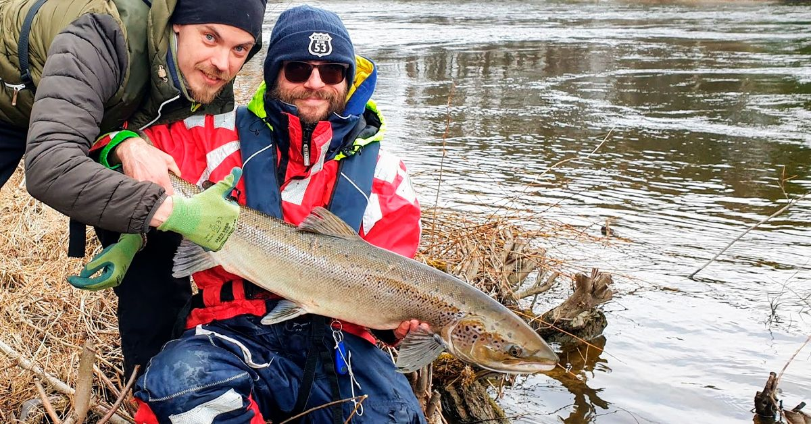
"Haluutko keväällä lähtee soutaa taimenta korkkarille? Kuhaa pukkaa sivusaaliina ja jos alkaa nousemaan aikaisin niin lohi irtoo talvikkona." 🙂
Tästä messangeriin tupsahtaneesta viestistä se idea sitten lähti. Sovimme luontokuvaaja Miikka Pulliaisen kanssa, että 29.3. sunnuntai pyhitetään jalokala jahtiin Kymijoella. Miikka on tullut tutuksi Longinojalla otetuista huikeista luontokuvista ja Vantaanjoella patoa päin hyppivien jalokalojen kohtalon hetkien tallentamisesta.
Ilokseni hän on myös kalastanut Kymijoella Korkeakosken soutualueella, koska tiesi projektini lähestyi hän kalareissutarjouksella.
Tämän hetken jälkeen saapui koronavirus, uudenmaan rajat menivät kiinni ja kalareissua piti siirtää. Sovimme rajan kiinni mentyä, että heti niiden aiuttua otetaan uusi yritys joelle lähdölle.

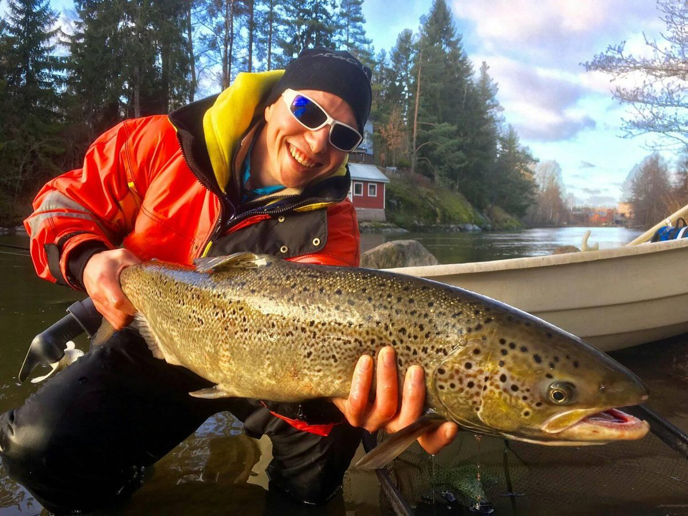
Alkuperäisessä suunnitelmassani, jota mietin lähes koko edellisen vuoden oli merkitty lohelle pyyntiajaksi marraskuu, paikkana Kymijoki ja soutajana myös Longinojalla tutuksi tullut Ari Laine. Ari oli oppaana myös Timi Laitiselle hänen ennätysvuotenaan ja lohesta nousi piste-ennätykseen laji nro 52 ja uusi elämänpiste ennätysmiehelle.
Lupa-asiat kuntoon

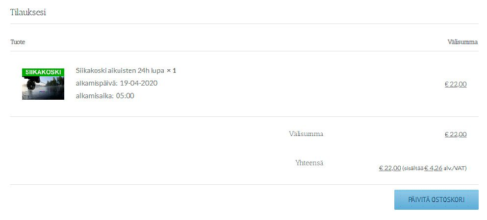
Lupa-asioiden selvittäminen alkoi Googlettamalla, tarvitsisimme Siikakosken luvan, jolla voisimme mennä Korkeakosken soutualueelle jalokaloja jahtaamaan. Kymijoen osalta on monta paikkaa mistä lupia voi hankkia ja osasta paikasta vain jollekin tietylle koskelle.
Lupa-asiat hoitui helposti netistä uusittujen https://lohikeskuskotka.fi/ verkkosivujen kautta.
Lupakaupasta löytyy helposti Korkeakosken ja nyt kohteena olevan Siikakosken lupa-alueen luvat.
Siikakosken lupa-alueeseen kuuluu: Ruhavuolle, Siikakoski, Kokonkoski, Hinttulankoski, Tattarinkoski , Tattarinkosken soutualue ja Korkeakosken soutualue. Lupa kattaa upeita paikkoja joista voi tavoittaa rannalta käsin nousukalojen lisäksi kirjolohia, toutaimia ja muita joen asukkeja.
- kausikortti 120 €
- viikkolupa 60 €
- aikuisten 24h lupa 22 €
- aikuisten 6h lupa 16 €
- nuorten 24h kalastuslupa 11 €
- nuorten (alle 18 vuotias) 6h kalastuslupa 8 €
Langinkosken luvat saat Eräluvat.fi -verkkokaupasta.
- 6 h (lupa voi alkaa klo 00:00, 06:00, 12:00 tai 18:00) 20 €
- 12 h (lupa voi alkaa klo 00:00, 06:00, 12:00 tai 18:00) 25 €
- 1 vrk (vuorokausilupa alkaa aina klo 18:00) 35 €
Joen alaosista ylöspäin mentäessä alkavat Keski-Kymen kalastusalueen lupakosket ja kalapaikat. Näiltä koskilta voi tavoitella turbosärkiä ja suuria turpia. Lupa-asioihin voi tutustua tästä.
Oppaan esivalmistelut

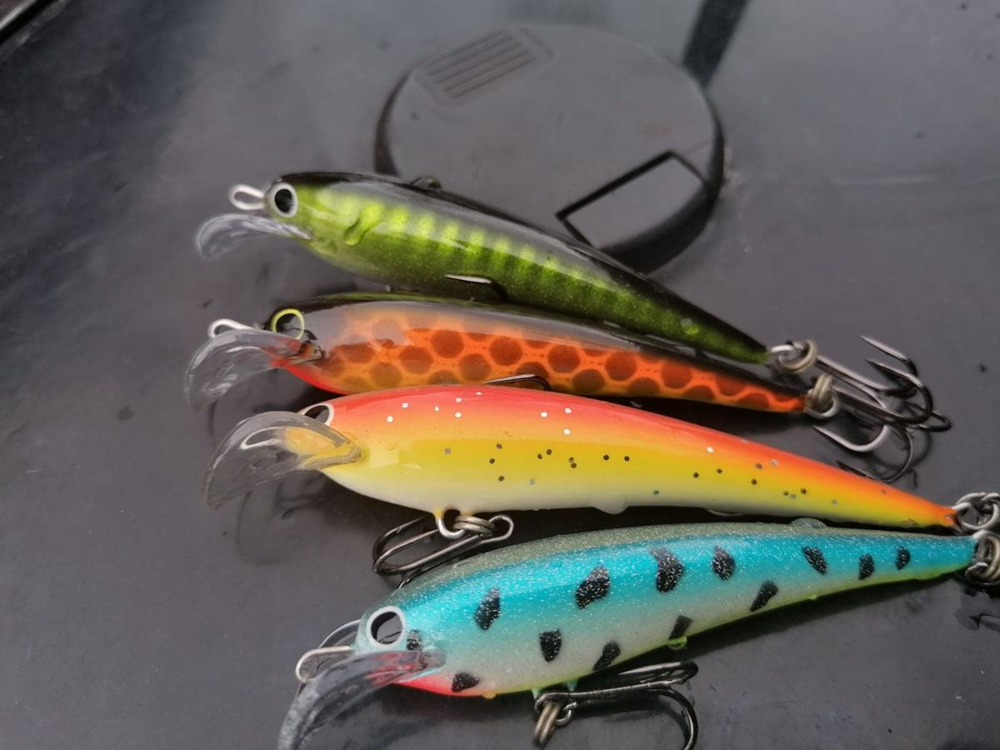
Soutamaan oppaaksi lähtevä Miikka oli jo ennakkoon selvittänyt ja hankkinut Kari Lossilta Kalossi -vaappuja ottiväreissä. Viimeisin silaus uintiin on tehty käsin virittämällä ja se on todettu toimivaksi Kymijoen vaihteleviin virtauksiin. Tutustu Kalossi Uistimiin heidän Facebook-sivuilla.

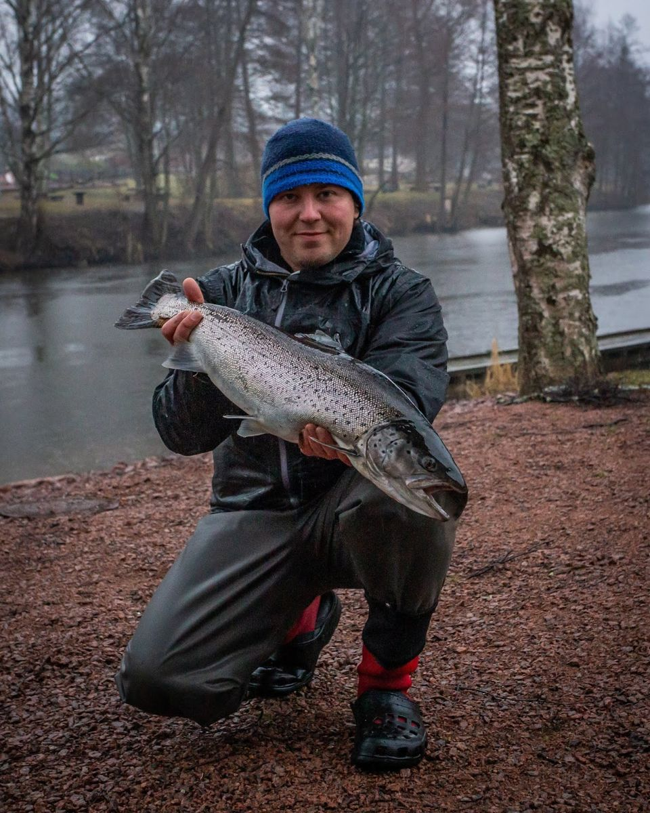
Soutuseuraksi lähtee Miikan lisäksi hänet vaahtosammuttimesta asti tuntenut Juho.
Kaveruksien keskinen synergia on ylitse pursuavaa ja kaikesta tekemisestä näkee, kuinka he nauttivat toistensa seurasta.
Yhteiset kalareissut muutama vuosi takaperin suuntautui lapin lisäksi myös nyt kalastuskohteena olevalle Kymijoelle. Reissua edeltävänä iltana messengeriin pärähtääkin viesti;
Tasan neljä vuotta ja kaksi päivää sitten.
Kuvassa kirkas upea Kymijoen taimen Juhon käsissä kimaltelee vesipisaroiden kyllästämänä.
Aamun ensisäteet paistoivat suoraan Uudenmaan alueen kyltin takaa, tästä piti ajaa jo maaliskuun lopulla kohti Etelä-Suomen upeimpiin kuuluvaa jokikalastuskohdetta. Kymijoki, tuo suurten lohien ja upeiden taimenten joki, padottu monihaarainen veden valtaväylä, jonka varrelle jää lukuisat kunnat, kylät ja kaupungit ja minkä syvä virta tarjoaa kalastajille ikimuistoisia hetkiä.

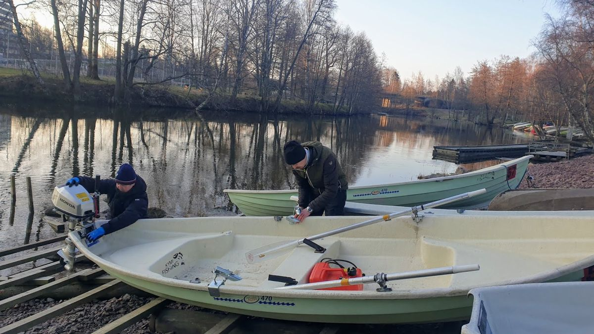
Meidän retkemme alkoi välineiden virittämiselle Kymin rantasaunalla, ennen seitsemää oltiin vesillä. Allemme oli Kymi Fishing Oy:n vuokravene, jonka perässä Miikan oma Hondan perämoottori. Korkkarilla olevassa veneessä on moottori valmiiksi, eli helposti pääsee alkuun.
Vain muutama minuuttia seitsemän jälkeen olimme Kymijokisuulla, taustalla lintujen laulukonsertin säestyksen upeita sulosäveliä peitti joenvarren teollisuusalueelta kantautuva pauhu.
Sinioranssi vilahdus - elis lintulistalle

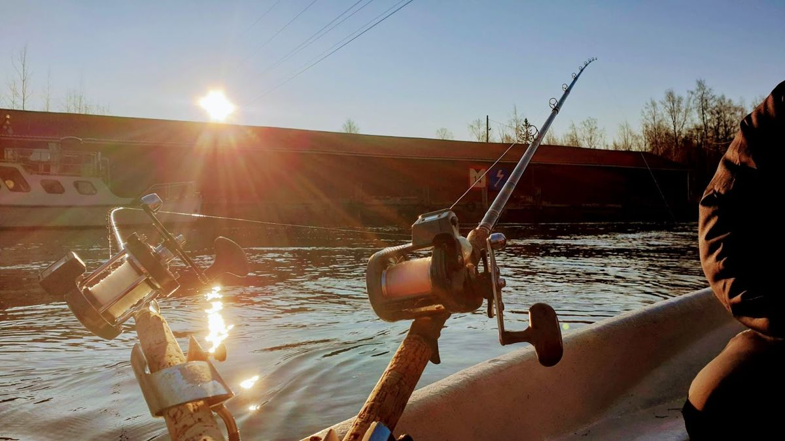
Kymijokisuun saarien kupeessa välineitä alas laskiessamme, huomasi soutajana oleva Miikka jotain pikaisesti ohikiitävää rannan tuntumassa.
”Kato kingi"
Kalastuspiireissä tämä tunnetaan kuningaslohena, mutta Miikka tarkoitti huudahduksellaa kuningaskalastajaa. Luontokuvaajana laji on tullut hänelle tutuksi pääkaupunkiseudulla, jossa kuvaus on saanut paikoittain huvittavia piirteitä, kun lajia jahdataan ympäri puron ja joen vartta. Miikka tekee toisin, hän antaa linnun tehdä päätökset. Hän odottaa. Lintu tulee kuvattavaksi, jos haluaa, jos ei jää kuva ottamatta.
Vierestämme vilahti yksi Suomen harvinaisimmista lintulajeista, olimme etuoikeutettuja tästä upeasta hetkestä. Meistä kolmesta vain Miikka on onnistunut näkemään ja kuvaamaan tämän upean sinioranssin linnun, jonka kalastustaidot ovat ihan omaa luokkaansa.
Näemme myöhemmin vielä toisen ohikiitävän hetken ajan tämän upean linnun, tämän jälkeen kunkku katoaa joen ympäristöön.
Aloitimme kalastamisen joen alaosalta Karhulansaaren ja Uusikylän teollisuusalueiden välissä. Entisaikoina näillä joen loppu osilla tehtiin sahatavaraksi menevien tukkien lajitteluja ja näistä ajoista on rannoilla erinäköisiä rakenteita jäljellä.
Alaosa ei tarjoa kuningaskalastaja havainnon lisäksi kuin yhden kalan pintakäynnin. Päätämme siirtyä kohti ylävirtaa.
Veturivaaput vetoon - opi tekniikka syvälle uisteluun - kunnioita muita

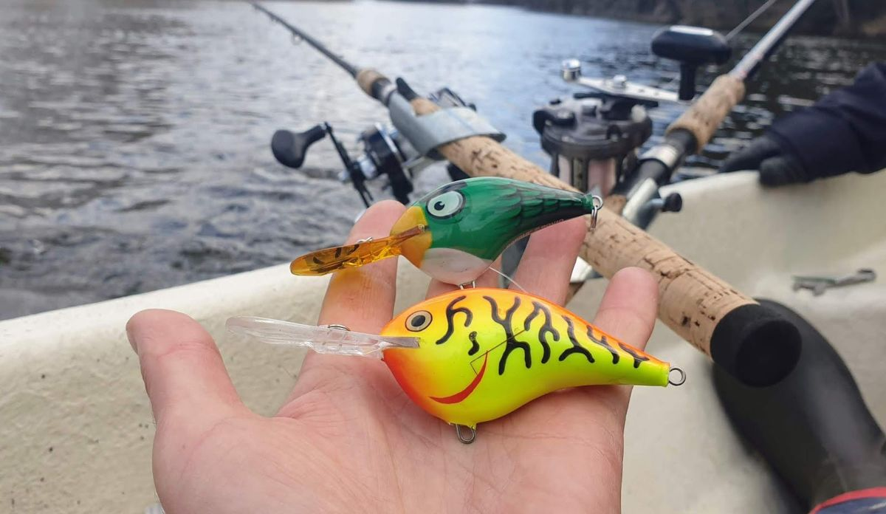
Soutaessa olennaisin asia on toisten kalastajien kunnioittaminen. Käytännössä tämä tarkoittaa sitä, ettei ohitella ilman lupaa, ei jäädä jumittamaan toisten ala- tai yläpuolelle (riippuen soudetaanko ala- vai ylävirtaan) ja odotetaan vuoroa jos soutualueella on ruuhkaa.
Ruuhkatilanteessa kannattaa suosiolla etsiä hiljaisempia soutupätkiä.
Siirtyessämme ylävirtaan viritetään vapoihin koukuttomat veturivaaput, eli syvääjät joiden tehtävä on viedä pyyntivaaput joen pohjaan. Yläosan syvät alueet ja kova virta vaativat pohjan tuntumassa uivat vieheet.
Tekniikka on hyvin yksinkertainen ja tätä voi hyödyntää myös normaalissa uistelussa.

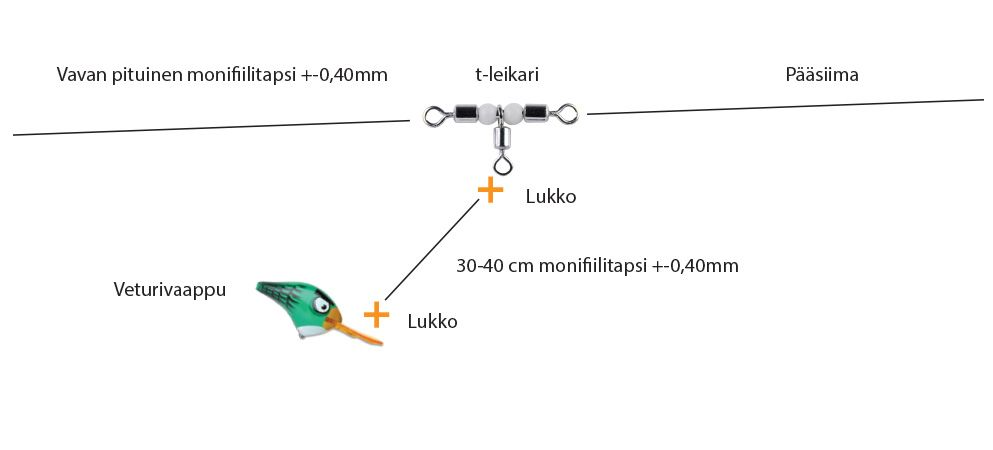
- Pääsiiman päähän kiinnitetään t-leikari
- t-leikariin pääsiimaa vastakkain olevaan lenkkiin noin vavan mittainen monifiilitapsi +-40mm paksuudeltaan. Tämän tapsin päähän tulee pyyntiviehe kiinni.
- t-leikarin alimpaan lenkkiin noin 30-40 cm pituinen monifiilitapsi +-40mm. Tämän tapsin molempiin paihin voi sitoa myös lukot. Tämä helpottaa kahden eri syvyydellä uivan veturivaapun tai syvääjän nopeaa vaihtamista.
- Veturivaappuna toimii syvälle uiva viehe, meillä oli käytössä kaksi eri kokoista Rapala Angry Birs vaappua, vieheissä ei käytetä koukkuja.
Ensimmäinen lasku yläalueella sujuu siimasotkuja selvittäessä ja auringonpaisteesta nauttiessa. Urheilukentän mutkassa edessämme oleva vene rantautuu ja vaihdamme kuulumiset. Tuon upean taimenen kuvan voit katsoa tästä.

"80 cm luomu tuli just äsken."
Onnittelemme saajia ja jatkamme soutua, samalla vapaa kertoo tärpistä. Miikka ottaa rivakat otteet ja vene nousee hieman ylävirtaan. Kelaamme Juhon kanssa vavat ylös ja saan neljännen vavan käteeni.
Kala! On täällä jotain, ei suurta, mutta jotain kuitenkin.

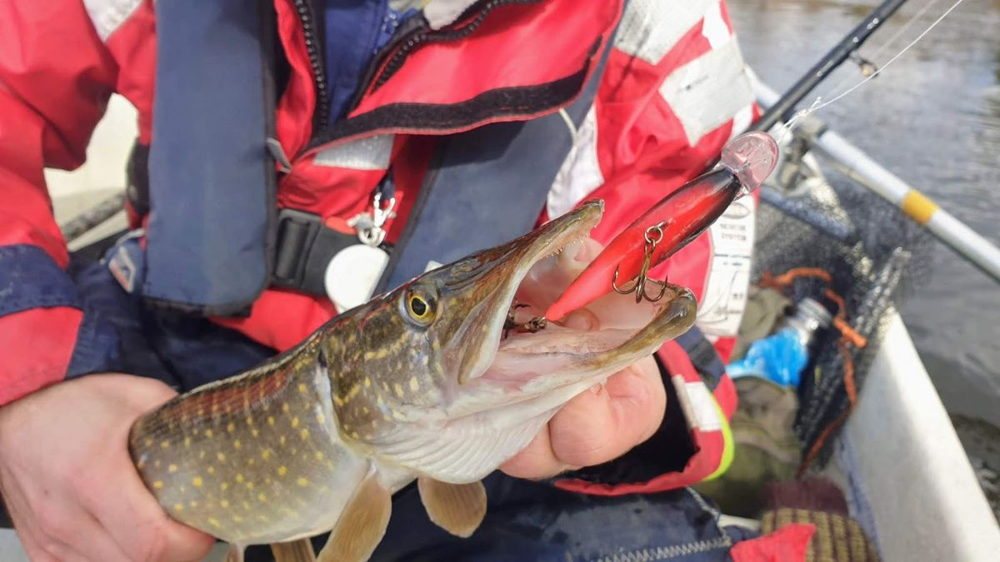
Päivä aukeaa haukipisteen saamisella JAN-vaapulla. 19 lajia kasassa kuluvalle vuodelle. Jälkikäteen tätä tekstiä kirjoittaessa hieman harmittaa pisteen saanti.
Kalastusopas Tero Ruoho tarjosi haukireissua tulevalle keskiviikolle, ehkä pistekalan kilomäärät olisi tuolla reissulla kirjoitettu toisiin lukemiin. Upea saada silti avauskala reissulle. Koukut irti, kuva ja hauki takaisin elementtiinsä.
Aika evästauon, vene rantasaunan laituriin kiinni ja penkille hetkeksi syömään. Pieni jaloittelulenkki ja takaisin vesille. Laskemme Hovinsuoran yläosassa vieheet vetoon, nyt on tavoitteena talvikkolohi. Tältä alueelta niitä yleensä tulee, kertoo Miikka.
Tyhjä lasku, kuten myös kaksi seuraavaa alaosassa.

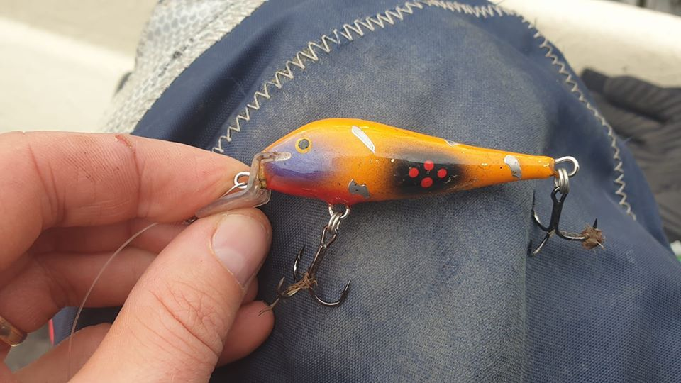
Lumo vaappujen tekijä Kim Laineella taas tärppäsi, katso videolla kuinka eväleikattu taimen nousee yläalueelta. Saman herran vaappu nousee mukana myös pohjatärpin jälkimainingeissa.
Joo mun vanha pulikka ei hienoin mut pelasti yhen päivän viimevuonna kolmella kalalla.
ja heittolaituri - upeat muistot

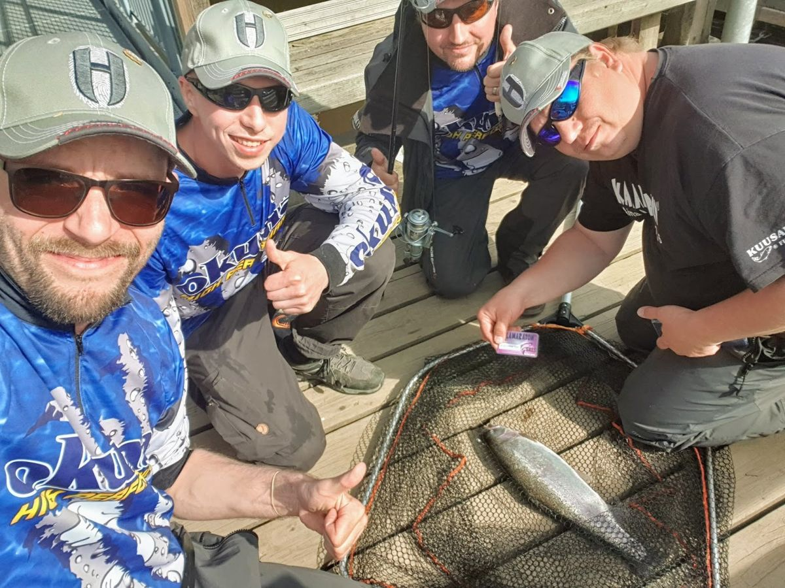
Kymijoki on yksi Suomen upeimmista joista, jonka pilaa vain patoaltaat ja vesivoimalaitokset. Potentiaali joessa on uskomaton joka valjastettuna matkailu ja virkistyskäyttöön antaisi joelle sen arvoisen tulevaisuuden.
Korkeakosken patoon saatiin tekninen kalatie, jonka kautta vaelluskalat pääsevät kohti yläpuolisia alueita. Vaelluskalojen nousu tyssää tämän jälkeen Ankkapurhan patoon.
Paljon on tehty, mutta enemmän olisi tehtävä. Saataisiinko seuraavaksi Pyhtään haaran Ahvenkosken vesivoimalan padon yhteyteen kalatie?
Ahvenkosken voimalaitoksen ohituksen jälkeen ohitettavia patoja olisi vain... 11.

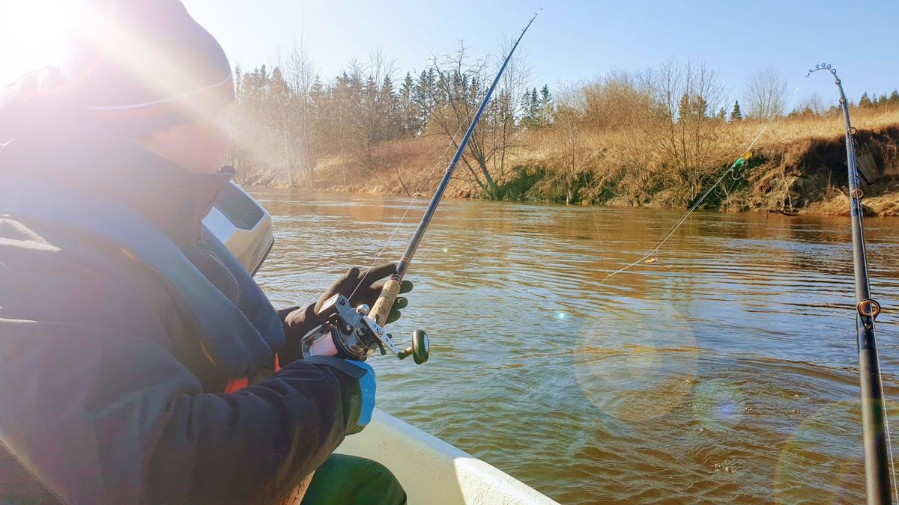
Korkeakosken heittolaituri ja toukokuinen Kalamaraton, taustalla vesivoimalaitos ja huutavat turbiinit. Raskaat välineet ja puntit, aamuyön viimeiset tunnit tai hektisimmät hetket kilpailun alkupuolella. Laiturin päädystä alavirtaan vajaan 300 metrin päästä alkaa soutualue.
Kaventuma joessa, punainen sauna rannassa ja kalastuskieltokyltti vastarannalla kertovat soutajille; nyt on aika laskea vieheet vetoon.
Vasempaan reunaan menee vihreällä Angry Birs -vaappu veturina toimiva SVS-lohivaappu, keskelle keltaisella isommalla leukalapulla varustettu ja peilikuvana myös oikealle puolelle. Saan juuri oikeanpuolimmaisen vavan telineeseen ja kun kela kopsahtaa telineeseen soutaja huutaa;
”KALA”
Nopeasti saamme Juhon kanssa kolme vapaa ylös ja saan vihdoin ottaa neljännen käteen. Tunnen kalan voimakkaat potkut, massaa on kalalla joka siiman päässä yrittää taistella itseään irti. SVS kerkesi uida kovassa virrassa vain muutaman minuutin, kun sitä tukistettiin urakalla. Nyt tuo tukistuksen aiheuttaja taistelee virrassa, kammenkierros kerrallaan kala lähenee venettä.
”Ei vielä, ei väsy. Vetää vaan”
Muistan elämänpiste loheni väsyttelyn Muonionjoella Sonkajamuotkassa, keulassa Nyymanin Miika oli hetkeä aikaisemmin todennut; Nyt tärppää. Niinhän se tärppäsi, tuolloin kristallinkirkas vesi ja kosken pauhun täyttävä hiljaisuus muistuivat mieleen kalaa väsytellessä.

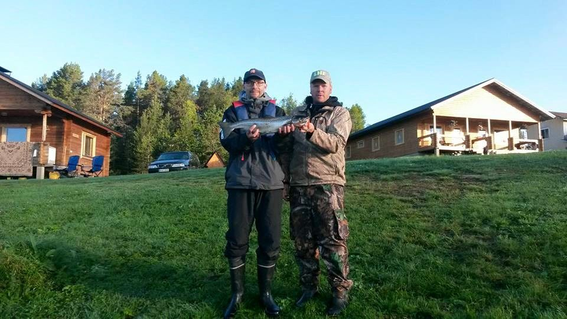
Nyt rantapenkan päällä olevan talon emäntä tuli seuraamaan väsytystä, taustalla pauhaa Korkeakosken voimalaitoksen turbiinit ja tehtaan piipustaa nousee valkoista savua. Urbaanista ympäristöstä huolimatta adrenaliini virtaa, jalat ja kädet jännittyvät ja pumppaan kalaa ylöspäin.
”Leikari näkyy, taitaa olla pesari?”
Pesari on Juhon ja Miikan kutsumanimi talvikkolohelle, kapea ja isopyrstöinen kala on ulkomuodoltaan pesismailan, eli pesarin näköinen. Ulkomuoto ei kuitenkaan vähennä upeiden kalojen saamista, vaikka välillä nämä nousevat ylös helposti vailla taistelua.
Lopulta Juhon haavi heilahtaakalan, huudan ja kysyn rantapenkalle saapuneelle rouvalle, saammeko rantautua hänen pihaansa mittaamaan ja vapauttamaan kalan.
Koska tekstillisestä kuvauksesta puuttuu suurinosa, kannattaa katsoa myöhemmin tuleva video tärpistä kalan vapautukseen asti..
92, 95, ja lopulta pyrstö aukinaisena 97 cm on lukema, joka näkyy kalan pään kärjen kohdalla. Puntari pysäsähtyy haavin kanssa reiluun kahdeksaan kiloon, jolloin kalan paino huitelee +-7 kg tienoilla, kun haavin painon vähentää lopputuloksesta.

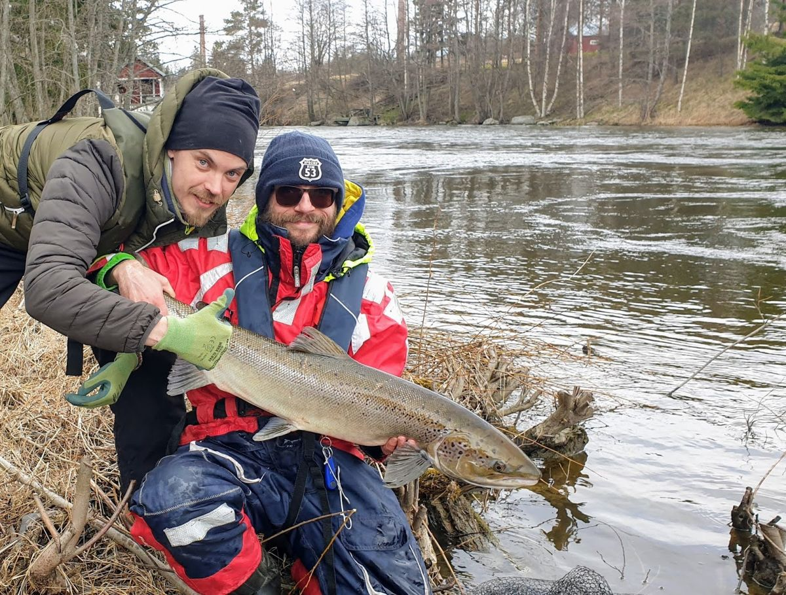
Laskeudumme taimenjahtiin joen alaosiin ja heti ensimmäisellä laskulla Kalossia ravistetaan. Muutama upea vavan alaspainuminen ja kala irti. Oliko se lopulta se kauan kaivattu taimentärppi?
Sitä emme saa koskaan tietää, voimme vain jossitella.
Pikainen koukkaus Katariinan puistoon, monnipiste vuosilistalle ja kohti kotia.
Kotiin ajaessani E18 moottoritietä kuuluu Kasari radiosta Michael Jacksonin kappale Heal the World. Kappaleessa lauletaan, tehdään jokainen osaltamme maailmasta parempi paikkaa elää;
The it feels that always
Love's enough for us growing
So make a better world
Make a better place
Hivenen ennen yhtä nukahdan sohvalle, tästä on hyvä jatkaa.

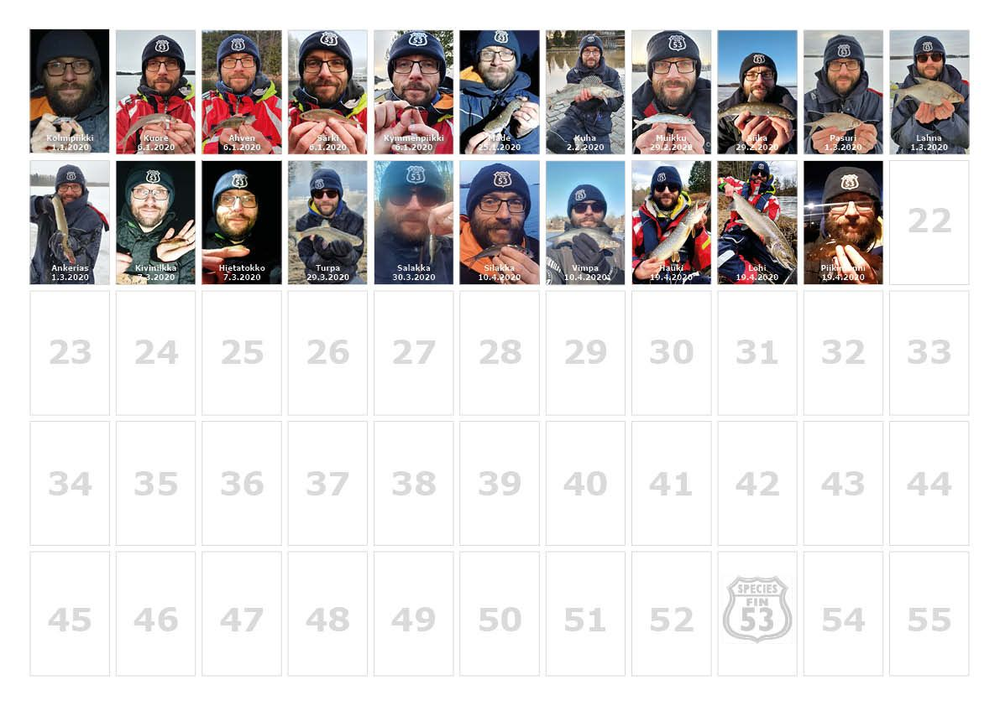
Seuraava reissu Kymijoelle tapahtuu toutainjahtiin ylävirtaan vloggari kalastaja Defen, eli Jesse Haaraojan kanssa. Tutustu Defen Youtube-kanavaan tästä.
Seuraa ennätyksen etenemistä
Pidän kirjaa lajilistasta ja tarkemmasta retkidatasta Google -taulukossa, joka löytyy jokaisesta ennätysyrityksen postauksesta. Tästä linkistä taulukko avautuu uuteen ikkunaan.
Seurantatilanne löytyy myös blogini oikeasta yläreunasta.
Vuoden aikana ennätysyrityksessä kulkee mukaan myös tämä kalataitelija-graaffikko Sakke Yrjölän suunnittelema SPECIES FIN 53 -merkki.
Paitakulmassa painatin pipoon ja lippikseen saman merkin. Tavoitteeni on saada aikaiseksi 53 saaliskuvaa tekstin alussa tekemääni taulukkoon joissa kaikissa kuvissa näkyisi tuo kyseinen tunnus.
Paitakulma on Suomalainen perheyritys, joka haluaa panostaa laatuun ja asiakastyytyväisyyteen. Tutustu yrityksen palveluihin tästä.